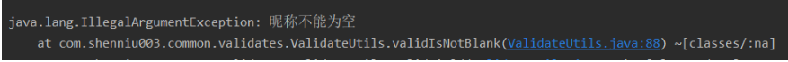
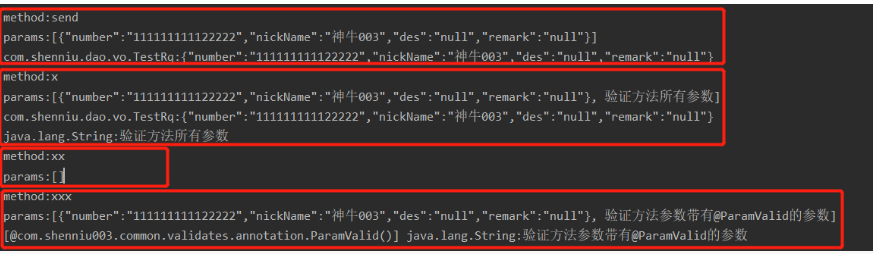

本次发表文章距上次发表已近有两月有余，原因是两月前离开了上家公司(离开原因可能会在年终终结叙述，本篇暂且忽略)，来到了现在所在的京东集团，需要花时间熟悉环境和沉淀一下新的东西，因此写文章也暂时没那么勤奋了，不得不说这次是机遇也是对自己职业生涯的一次重要决定。
话说本篇内容主要分享的是自定义方法参数的验证，参数的基本校验在对外接口或者公用方法时经常所见，用过hibernate的验证方式的朋友一定不会陌生，读完本篇内容能够很好的帮助各位朋友对自定义参数验证方式有一定了解：
对于自定义参数验证来说，需要注意的步骤有以下几步：
根据上面思路描述，我们首先需要有注解来标记哪些实体属性需要做不同的校验，因此这里创建两种校验注解(为了本章简短性):IsNotBlank(校验不能为空)和RegExp(正则匹配校验)，如下代码：
1 @Documented
2 @Retention(RetentionPolicy.RUNTIME)
3 @Target(ElementType.FIELD)
4 public @interface IsNotBlank {
5 String des() default "";
6 }1 @Documented
2 @Retention(RetentionPolicy.RUNTIME)
3 @Target(ElementType.FIELD)
4 public @interface RegExp {
5 String pattern();
6
7 String des() default "";
8 }然后为了统一这里创建公用的验证方法，此方法需要传递待验证参数的具体实例，其主要做的工作有：
这里有如下公用的验证方法：
1 public class ValidateUtils {
2
3 public static void validate(Object object) throws IllegalAccessException {
4 if (object == null) {
5 throw new NullPointerException("数据格式校验对象不能为空");
6 }
7 //获取属性列
8 Field[] fields = object.getClass().getDeclaredFields();
9 for (Field field : fields) {
10 //过滤无验证注解的属性
11 if (field.getAnnotations() == null || field.getAnnotations().length <= 0) {
12 continue;
13 }
14 //允许private属性被访问
15 field.setAccessible(true);
16 Object val = field.get(object);
17 String strVal = String.valueOf(val);
18
19 //具体验证
20 validField(field, strVal);
21 }
22 }
23
24 /**
25 * 具体验证
26 *
27 * @param field 属性列
28 * @param strVal 属性值
29 */
30 private static void validField(Field field, String strVal) {
31 if (field.isAnnotationPresent(IsNotBlank.class)) {
32 validIsNotBlank(field, strVal);
33 }
34 if (field.isAnnotationPresent(RegExp.class)) {
35 validRegExp(field, strVal);
36 }
37 /** add... **/
38 }
39
40 /**
41 * 匹配正则
42 *
43 * @param field
44 * @param strVal
45 */
46 private static void validRegExp(Field field, String strVal) {
47 RegExp regExp = field.getAnnotation(RegExp.class);
48 if (Strings.isNotBlank(regExp.pattern())) {
49 if (Pattern.matches(regExp.pattern(), strVal)) {
50 return;
51 }
52 String des = regExp.des();
53 if (Strings.isBlank(des)) {
54 des = field.getName() + "格式不正确";
55 }
56 throw new IllegalArgumentException(des);
57 }
58 }
59
60 /**
61 * 非空判断
62 *
63 * @param field
64 * @param val
65 */
66 private static void validIsNotBlank(Field field, String val) {
67 IsNotBlank isNotBlank = field.getAnnotation(IsNotBlank.class);
68 if (val == null || Strings.isBlank(val)) {
69 String des = isNotBlank.des();
70 if (Strings.isBlank(des)) {
71 des = field.getName() + "不能为空";
72 }
73 throw new IllegalArgumentException(des);
74 }
75 }
76 }有了具体验证方法，我们需要个测试实例，如下测试接口和实体：
1 public class TestRq extends BaseRq implements Serializable {
2
3 @IsNotBlank(des = "昵称不能为空")
4 private String nickName;
5 @RegExp(pattern = "\\d{10,20}", des = "编号必须是数字")
6 private String number;
7 private String des;
8 private String remark;
9 }1 @PostMapping("/send")
2 public BaseRp<TestRp> send(@RequestBody TestRq rq) throws IllegalAccessException {
3 ValidateUtils.validate(rq);
4 return testService.sendTestMsg(rq);
5 }
上面是围绕公用验证方法来写的，通常实际场景中都把它和aop结合来做统一验证；来定制两个注解，MethodValid方法注解(是否验证所有参数)和ParamValid参数注解(标记方法上的某个参数)：
1 @Documented
2 @Retention(RetentionPolicy.RUNTIME)
3 @Target(value = {ElementType.METHOD})
4 public @interface MethodValid {
5 /**
6 * 验证所有参数
7 *
8 * @return true
9 */
10 boolean isValidParams() default true;
11 }1 @Documented
2 @Retention(RetentionPolicy.RUNTIME)
3 @Target(value = {ElementType.PARAMETER})
4 public @interface ParamValid {
5 }有了两个标记注解再来创建aop，我这里是基于springboot框架的实例，所有引入如下mvn：
1 <dependency>
2 <groupId>org.springframework.boot</groupId>
3 <artifactId>spring-boot-starter-aop</artifactId>
4 </dependency>然后aop需要做如下逻辑：
这里特殊的地方是，想要获取方法参数对应的注解，需要method.getParameterAnnotations()获取所有所有参数注解后，再用索引来取参数对应的注解；如下aop代码：
1 package com.shenniu003.common.validates;
2
3 import com.shenniu003.common.validates.annotation.MethodValid;
4 import com.shenniu003.common.validates.annotation.ParamValid;
5 import org.aspectj.lang.ProceedingJoinPoint;
6 import org.aspectj.lang.annotation.Around;
7 import org.aspectj.lang.annotation.Aspect;
8 import org.aspectj.lang.reflect.MethodSignature;
9 import org.springframework.stereotype.Component;
10
11 import java.lang.annotation.Annotation;
12 import java.lang.reflect.Method;
13 import java.util.Arrays;
14
15 /**
16 * des：
17 *
18 * @author: shenniu003
19 * @date: 2019/12/01 11:04
20 */
21 @Aspect
22 @Component
23 public class ParamAspect {
24
25 @Around(value = "@annotation(methodValid)", argNames = "joinPoint,methodValid")
26 public Object validMethod(ProceedingJoinPoint joinPoint, MethodValid methodValid) throws Throwable {
27 MethodSignature methodSignature = (MethodSignature) joinPoint.getSignature();
28 Method method = methodSignature.getMethod();
29 System.out.println("method:" + method.getName());
30 String strArgs = Arrays.toString(joinPoint.getArgs());
31 System.out.println("params:" + strArgs);
32
33 //获取方法所有参数的注解
34 Annotation[][] parametersAnnotations = method.getParameterAnnotations();
35
36 for (int i = 0; i < joinPoint.getArgs().length; i++) {
37 Object arg = joinPoint.getArgs()[i];
38 if (arg == null) {
39 continue; //
40 }
41
42 if (methodValid.isValidParams()) {
43 //验证所有参数
44 System.out.println(arg.getClass().getName() + ":" + arg.toString());
45 ValidateUtils.validate(arg);
46 } else {
47 //只验证参数前带有ParamValid注解的参数
48 //获取当前参数所有注解
49 Annotation[] parameterAnnotations = parametersAnnotations[i];
50 //是否匹配参数校验注解
51 if (matchParamAnnotation(parameterAnnotations)) {
52 System.out.println(Arrays.toString(parameterAnnotations) + " " + arg.getClass().getName() + ":" + arg.toString());
53 ValidateUtils.validate(arg);
54 }
55 }
56 }
57 return joinPoint.proceed();
58 }
59
60 /**
61 * 是否匹配参数的注解
62 *
63 * @param parameterAnnotations 参数对应的所有注解
64 * @return 是否包含目标注解
65 */
66 private boolean matchParamAnnotation(Annotation[] parameterAnnotations) {
67 boolean isMatch = false;
68 for (Annotation parameterAnnotation : parameterAnnotations) {
69 if (ParamValid.class == parameterAnnotation.annotationType()) {
70 isMatch = true;
71 break;
72 }
73 }
74 return isMatch;
75 }
76 }这里编写3中方式的测试用例，验证方法所有参数、无参数不验证、验证方法参数带有@ParamValid的参数，以此达到不同需求参数的校验方式：
1 //验证方法所有参数
2 @MethodValid
3 public void x(TestRq param1, String param2) {
4 }
5 //无参数不验证
6 @MethodValid
7 public void xx() {
8 }
9 //验证方法参数带有@ParamValid的参数
10 @MethodValid(isValidParams = false)
11 public void xxx(TestRq param1, @ParamValid String param2) {
12 }同样用send接口作为测试入口，调用上面3种方法：
1 @PostMapping("/send")
2 @MethodValid
3 public BaseRp<TestRp> send(@RequestBody TestRq rq) throws IllegalAccessException {
4 // ValidateUtils.validate(rq);
5 testController.x(rq, "验证方法所有参数");
6 testController.xx();
7 testController.xxx(rq, "验证方法参数带有@ParamValid的参数");
8 return testService.sendTestMsg(rq);
9 }